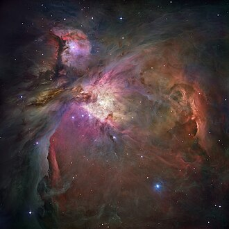
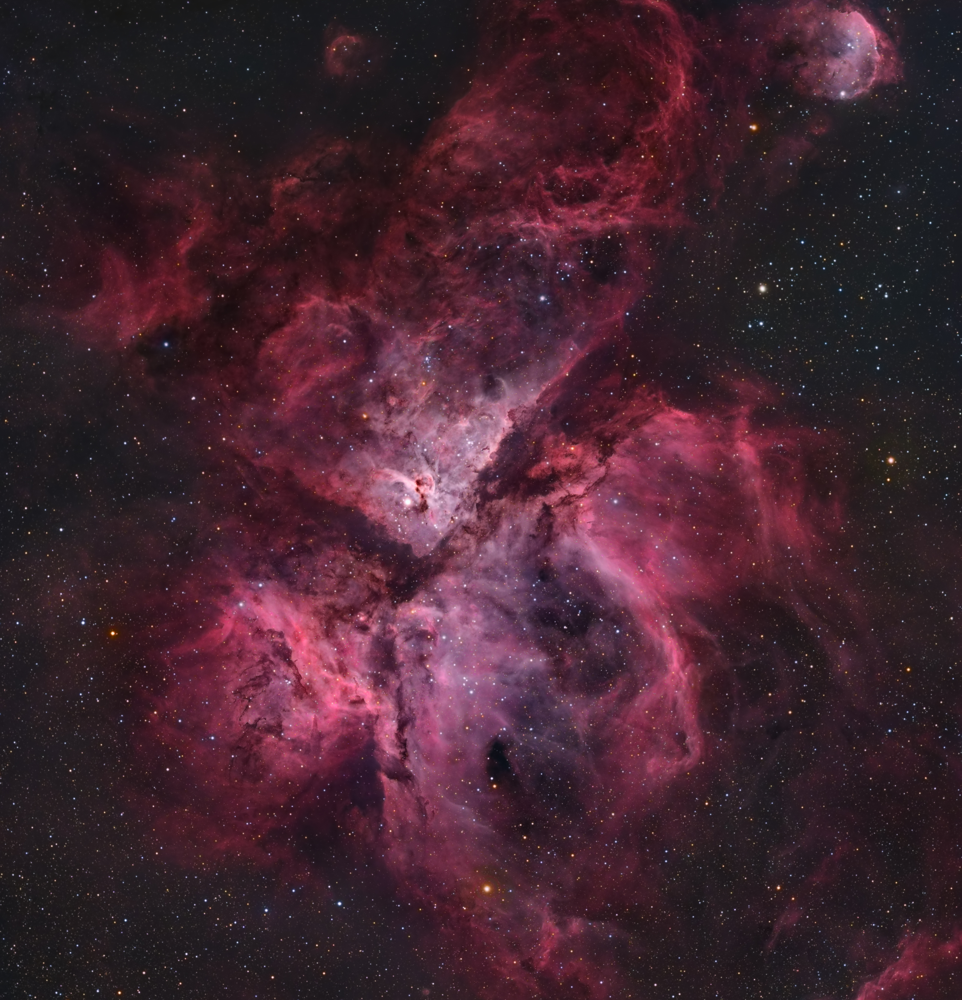
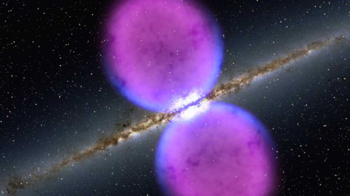
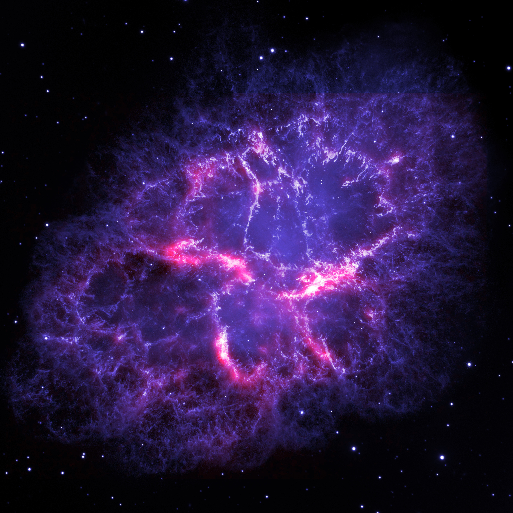

The Milky Way is a sprawling barred spiral galaxy that serves as our vast cosmic home,
containing hundreds of
billions of stars and a breathtaking array of celestial wonders. At its very heart lies Sagittarius A*, a
supermassive black hole four million times more massive than our Sun, while we reside in the Orion Arm,
about two-thirds of the way out from the center. The galaxy is constantly evolving; it is filled with star
nurseries called nebulae where new stars are born, and it has grown to its current size by "eating" smaller
galaxies over billions of years. Even though our Solar System cruises at a staggering 515,000 mph, the
galaxy is so immense that it still takes roughly 230 million years to complete a single orbit around the
galactic center. When you look up at the "milk" in the night sky, you are actually seeing the combined glow
of billions of distant stars, partly obscured by thick lanes of interstellar dust. It is an ancient and
dynamic neighborhood, currently on a long-term collision course to merge with the Andromeda galaxy in about
4 billion years, proving that our "home street" is part of an ever-changing cosmic story.
Sagittarius A*
Click to flip
The Galactic Center
A supermassive black hole 4 million times the mass of our Sun. It acts as the gravitational
anchor for our entire galaxy.

Orion Nebula
Click to flip
Star Nursery
The closest large star-forming region to Earth. It is a massive laboratory where scientists watch
new solar systems being born.
Eagle Nebula
Click to flip
Pillars of Creation
A spectacular region of star formation where towering clouds of gas and dust are being sculpted
by the light of newborn stars.

Carina Nebula
Click to flip
Cosmic Cliffs
A massive star-forming region home to Eta Carinae, a star 100 times the mass of our Sun. Its
"cliffs" are made of glowing gas and dust.

Fermi Bubbles
Click to flip
High Energy Gas
Giant structures of Gamma rays stretching 25,000 light-years above and below the disk, likely
caused by a past eruption.

Crab Nebula
Click to flip
Supernova Remnant
The remains of a massive star that exploded in 1054 AD. At its center lies a Pulsar—a star
spinning 30 times per second!